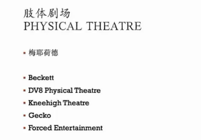

Art Performance Lecture Notes
条评论晚上听课里说的一个剧 阿喀琉斯进场

精神分析视角看阿布拉莫维奇的行为艺术作品
本文中提出的反思是通过分析行为艺术家玛丽娜·阿布拉莫维奇的作品 Rythm0, Rythm 10, Imponderables, Rest Energy 和对视引发的。
自传中写到，玛丽娜·阿布拉莫维奇 1946 年出生于贝尔格莱德，当时塞尔维亚人正处于战争的结束和前南斯拉夫共产主义政权的开始。她是获得勋章的共产主义战争英雄的长女，即使没有盟军的政治和物质支持，也依旧坚持对轴心国军队的武装抵抗。这让阿布拉莫维奇夫妇对他们的国家有着共同的自豪感。他们有两个孩子和一间房子，里面有严格的纪律教育，有既定的规则，需要严格遵守最勤奋的士兵。母亲是遥远而几乎冷漠的冷漠的化身。她有条不紊，并制定了女儿每天必须遵守的规则。如果由于某种原因忽略了一些小细节，她将受到毒打的惩罚。
因此不难理解，在阿布拉莫维奇的作品中，为什么常常涉及强制、痛苦和规则。这些作品是对她童年期经历的一种重建。[1] 她的作品中，总是体现着非常强烈的对抗性，无论是与乌雷合作的作品中，还是在她独立完成的作品中。与某种权力或力量对抗是重要的主题，它包含了一种二元论的色彩。文化运动五月风暴对二元论进行了消解，通过政治斗争和话语争鸣，多元化、多样性和差异性逐渐成为政治正确性的内容，但这无法回避自由世界需要借助二元论来维系其整体性、其在价值谱系中的崇高地位。[2]。但阿布拉莫维奇的作品则将二元对立中的价值判断问题重新搬了出来：强调多元化、差异性的政治正确仅仅是对一个内在被需求的对抗性结构的遮蔽。她的作品即成为了言说、宣泄这种二元性的空间。
Rythm0 中，阿布拉莫维奇最初穿着黑色的 T 恤站在那里。她对观众给出了两个信号，一是“桌子上的72种工具”：口红、子弹、枪、菜刀、鞭子。其中这些危险物品的暗示着“伤害”、“死亡”……二是“对她做任何事都是可以的”，看似中性的描述，实则是对围观者的一种怂恿、挑动。很快，她身上的黑色 T 恤被剪开，有人用上了膛的枪指着她；同时，也有人自动对她进行保护。最终在人们的保护中，这件作品自然地结束了。在这里，对立的双方是什么？是阿布拉莫维奇和外界的一切？还是毫无顾忌地对她“做任何事”的观众，与保护着她的观众的对立？我认为这里最终呈现的效果无疑是后者。更准确地说，是“自由冲动”与“道德感”的对立。这其实是一个非常重要，并且结论并不是那么明确的论题。
这里的“冲动”，并不是“原始冲动”所指的人的动物性。从源头上来看，它与“道德感”是产生于同样的阶段的，都是拉康意义下的“自我”。同时，也不能单单认为只有“道德感”是受到社会规训、异化而来的。这两种态度都应当被认为是在大写他者的欲望驱使下产生的态度。没有哪一个是更本真的，如果抛弃一切预设的立场，想要对两种行为做出价值判断，则变得更加困难。
Rest Energy 中，阿布拉莫维奇和乌雷两人合作着拉开了一支弓，并把箭头对准了阿布拉莫维奇的心脏。二人的胸口都装了录音器，在长达 4 分 10 秒的时间里，加速的心跳清晰可闻。这是一个既危险又浪漫的场景，当然是表明了一种绝对的信任关系。另一个主流的解读是，展现了生命的脆弱。弓在其中是一种危险感的代表，生与死的界限仅仅在于一个微不足道的改变甚至失误。
我在这件作品中，看到它是主体间关系的一种形象的表达。黑格尔发现了“我在我的存在中依赖别人”，或者说，“我是一个由于一个别人才是自为的存在”。他们承认着他们自己，因为他们彼此相互地承认着他们自己。但当自我意识处在自在阶段时，那另一个对方却带有“否定性的性格”，所以，我与他人的初始关系是极端对立的，这表现为一种斗争，一场“生死的斗争”。[3] 这里就出现了由对象反射得来的物性镜像式的关系：通过它的对方才是它自己。
总结
浅浅地把这学期所斜视的两个领域的东西无端地结合起来。事实上我在看到作品的时候这就是我产生的第一反应，但是事后再去想就非常牵强。最后匆忙地写下来，字数也未达标，望谅解。
[1] Simões, L. and Passos, M. (2018) 玛丽娜·阿布拉莫维奇的行为艺术作为一种变革性体验。心理学，9，1329-1339. DOI：10.4236/Psych.2018.96081
[2] 翟晶，没有他者性的他者:论三位当代艺术家，《世界美术》 2016 年 04 期
[3] 张一兵：《拉康哲学映像——不可能的存在之真》修订版，上海人民出版社，第 107 页